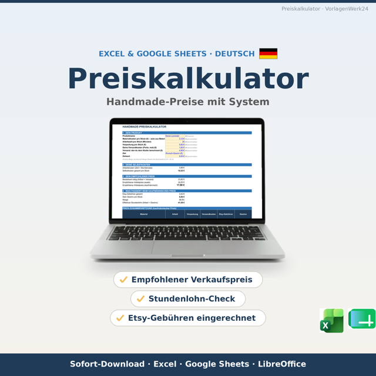
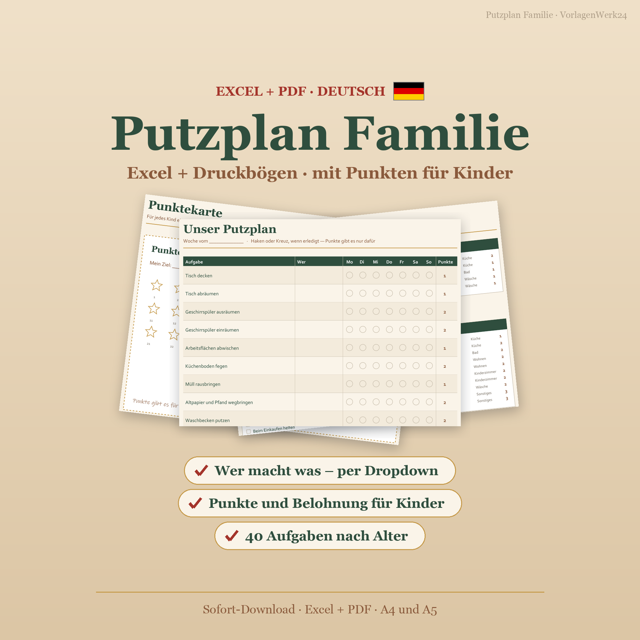

Deutsche Vorlagen für Selbstständige, Vermieter und Familien — jede Formel handgeprüft, jede Rechtsangabe mit Stand-Datum. Kein Abo, keine Makros, Sofort-Download.
Zum Etsy-Shop →30+ Vorlagen · Excel, Google Sheets & LibreOffice · inkl. ausgefüllter Beispiele
Jede Vorlage entsteht mit Handrechnung, Grenzfall-Tests und einem ausgefüllten Beispiel.

Preiskalkulation für Torten, Kerzen, Seifen, Schmuck, Nähen, 3D-Druck & Co. — plus Rechnungstool und Finanz-Cockpit für Kleinunternehmer (§ 19 UStG).
Preiskalkulator ansehen →Nebenkostenabrechnung mit CO2-Aufteilung, Mieterhöhungs-Rechner nach § 558 BGB, Fristen-Checkliste, Baukosten-Tracker und Ferienwohnungs-Rechner.
Nebenkostenabrechnung ansehen →
Putzplan mit Punktesystem für Kinder, Wochenplaner, Schuljahresplaner, Notenliste für Lehrkräfte, Weihnachtsplaner und Wichtelbriefe.
Putzplan Familie ansehen →Haushaltsbuch mit 50/30/20-Auswertung und Sparplan mit Sparzielen, nötiger Monatsrate und 52-Wochen-Challenge.
Sparplan ansehen →Mini-Kalkulator für Handmade-Verkäufer — Mindestpreis, Gewinn-Check und dein effektiver Stundenlohn. Als Dankeschön für die Anmeldung zum Newsletter (jederzeit abbestellbar).
Gratis-Vorlage holen →Schritt-für-Schritt-Anleitungen zu den Themen unserer Vorlagen — immer mit Stand-Datum.